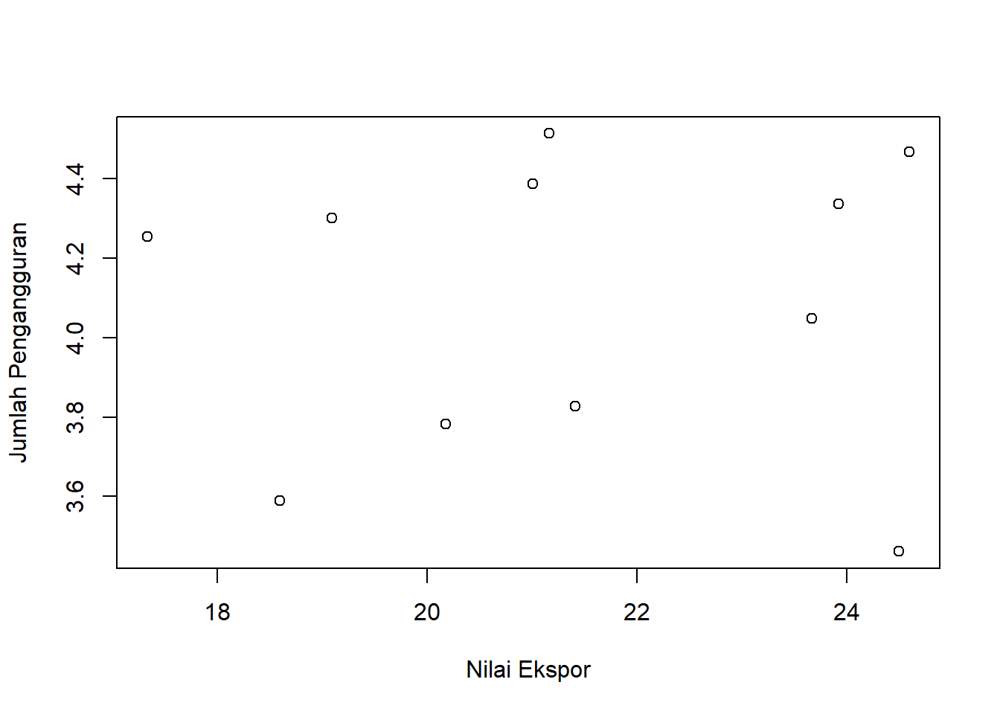
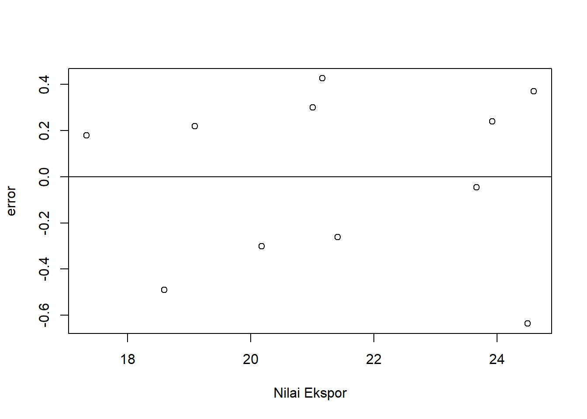

library(tidyverse)
library(readxl)
library(WDI) Pengaruh Nilai Ekspor terhadap Jumlah Pengangguran di Indonesia pada tahun 2012-2022
Metode Penelitian Politeknik APP Jakarta

1 Pendahuluan
1.1 Latar Belakang
Indonesia merupakan negara dengan potensi ekspor yang besar, namun tingkat pengangguran di Indonesia juga masih tinggi. Ekspor merupakan salah satu faktor penting yang dapat mendorong pertumbuhan ekonomi. Pertumbuhan ekonomi yang tinggi dapat menciptakan lapangan kerja baru dan mengurangi pengangguran. Pengangguran merupakan masalah sosial yang serius. Pengangguran dapat menyebabkan kemiskinan, kriminalitas, dan masalah sosial lainnya. Oleh karena itu, penting untuk menganalisis pengaruh nilai ekspor terhadap tingkat pengangguran di Indonesia. Hasil penelitian tentang topik ini dapat digunakan untuk merumuskan kebijakan yang tepat untuk meningkatkan ekspor dan mengurangi pengangguran di Indonesia, sehingga dapat meningkatkan kesejahteraan masyarakat dan mewujudkan keadilan sosial.
Penelitian kuantitatif dengan menggunakan data statistik untuk menganalisis hubungan antara nilai ekspor dan tingkat pengangguran. Penelitian tentang topik ini dapat dilakukan oleh para peneliti dari berbagai disiplin ilmu, seperti ekonomi, ilmu politik, dan sosiologi. Dalam argumen ekonomi, Ekspor merupakan salah satu faktor penting yang dapat mendorong pertumbuhan ekonomi. Pertumbuhan ekonomi yang tinggi dapat menciptakan lapangan kerja baru dan mengurangi pengangguran. Oleh karena itu, peningkatan ekspor dapat menjadi salah satu solusi untuk mengurangi pengangguran di Indonesia. Lalu dari argumen sosial, Pengangguran merupakan masalah sosial yang serius. Pengangguran dapat menyebabkan kemiskinan, kriminalitas, dan masalah sosial lainnya. Oleh karena itu, penyelesaian permasalahan pengangguran dapat menjadi salah satu upaya untuk meningkatkan kesejahteraan masyarakat dan mewujudkan keadilan sosial. Kemudian dari argumen politik, Pengangguran dapat menjadi sumber ketidakstabilan politik. Masyarakat yang menganggur dapat menjadi sasaran mudah bagi kelompok-kelompok politik yang radikal. Oleh karena itu, penyelesaian permasalahan pengangguran dapat menjadi salah satu upaya untuk menjaga stabilitas politik di Indonesia. Argumen-argumen tersebut menunjukkan bahwa permasalahan pengaruh nilai ekspor terhadap jumlah pengangguran di Indonesia merupakan permasalahan yang penting dan perlu diselesaikan. Penyelesaian permasalahan ini dapat memberikan manfaat yang besar bagi perekonomian, sosial, dan politik Indonesia.
1.2 Ruang Lingkup
Dalam penelitian ini penulis mengambil objek penelitian dari Badan Pusat Statistik Indonesia. Ruang lingkup penelitian ini terdapat 2 variabel antara lain nilai ekspor Indonesia, dan jumlah pengangguran di Indonesia. Data yang digunakan adalah data yang bersifat time series yaitu dalam kurun waktu 2012-2022, data inilah yang kemudian menjadi objek penelitian.
1.3 Rumusan Masalah
Berdasarkan uraian latar belakang diatas maka yang menjadi masalah pokok pada penelitian ini adalah:
-
Apakah nilai ekspor berpengaruh pada jumlah pengangguran di Indonesia?
-
Bagaimana hubungan nilai ekspor terhadap jumlah pengangguran di Indonesia?
1.4 Tujuan dan Manfaat Penelitian
Bagian Berdasarkan latar belakang dan permasalahan yang ada maka tujuan dari penelitian ini adalah untuk mengetahui pengaruh nilai ekspor terhadap jumlah pengangguran di Indonesia dan mengetahui hubungan nilai ekspor terhadap peningkatan jumlah pengangguran di Indonesia..
Adapun manfaat dari penelitian ini antara lain:
1. Manfaat Teoritis
Penelitian ini diharapkan dapat memberikan bantuan pemikiran dan menjadi ilmu pengetahuan bagi para pembaca untuk menambah wawasan seputar ekonomi.
2. Manfaat Praktis
a. Bagi Penulis
Diharapkan penelitian ini bisa menjadi referensi bagi mereka yang ingin memperdalam tentang kegiatan ekspor, impor, dan jumlah pengangguran, sehingga dengan adanya karya lain secara tidak langsung penelitian ini mengalami penyempurnaan secara terus menerus. Dan diharapkan penelitian ini juga dapat menjadi referensi bagi setiap penulis yang ingin mengetahui penelitian menggunakan sistem regresi melalui R Studio.
b. Bagi instansi
Sebagai bahan masukan dan saran guna untuk memperbaiki sistem perekonomian Indonesia.
1.5 Package
Packages yang digunakan antara lain sebagai berikut:
2 Studi Pustaka
Nilai Ekspor adalah nilai seluruh barang dan jasa yang dikirimkan ke luar negeri yang ditentukan oleh permintaan luar negeri. Nilai ekspor dihitung dengan mengalikan jumlah barang dan jasa yang diekspor dengan harga barang dan jasa tersebut. Nilai ekspor merupakan salah satu indikator penting untuk mengukur kinerja perekonomian suatu negara. Nilai ekspor yang tinggi menunjukkan bahwa suatu negara memiliki kemampuan untuk menjual barang dan jasanya ke luar negeri. Hal ini dapat meningkatkan pendapatan negara, mendorong pertumbuhan ekonomi, dan menciptakan lapangan kerja.
Nilai ekspor dalam penelitian ini yaitu nilai ekspor dari tahun 2020 sampai dengan tahun 2022 dengan pengambilan data melalui situs kementerian perdagangan serta data yang bersumber dari BPS.
Pengangguran adalah suatu keadaan di mana seseorang yang termasuk dalam angkatan kerja ingin memperoleh pekerjaan tetapi belum berhasil mendapatkannya. Angkatan kerja adalah penduduk yang berusia 15 tahun ke atas yang bekerja, mencari pekerjaan, dan mempersiapkan usaha. Pengangguran merupakan masalah ekonomi dan sosial yang serius. Pengangguran dapat menyebabkan kemiskinan, kriminalitas, dan masalah sosial lainnya.
Terdapat teori yang mengemukakan tentang pengangguran, yaitu pengangguran disebabkan oleh permintaan agregat yang rendah. Permintaan agregat yang rendah membuat pengusaha tidak dapat menjual barang dan jasa sebanyak yang mereka inginkan, sehingga mereka mengurangi jumlah tenaga kerja yang mereka kerjakan (keynesian 1936).
Adapun teori yang mengatakan bahwa nilai ekspor mempengaruhi jumlah pengangguran yang ada yaitu;
- Teori Keynesian, menyatakan bahwa permintaan agregat, yang terdiri dari permintaan domestik dan permintaan luar negeri, merupakan faktor utama yang menentukan tingkat output dan lapangan kerja. Peningkatan permintaan agregat akan mendorong pertumbuhan ekonomi dan menciptakan lapangan kerja baru.
Dalam konteks topik ini, peningkatan ekspor dapat meningkatkan permintaan agregat, sehingga dapat mendorong pertumbuhan ekonomi dan mengurangi pengangguran.
- Teori Heckscher-Ohlin, menyatakan bahwa perdagangan internasional akan mendorong spesialisasi produksi dan perdagangan antar negara. Negara-negara akan mengekspor barang dan jasa yang mereka produksi dengan biaya lebih efisien dan mengimpor barang dan jasa yang mereka produksi dengan biaya lebih mahal.
Dalam konteks topik ini, peningkatan ekspor dapat mendorong spesialisasi produksi di sektor-sektor yang memiliki keunggulan komparatif, sehingga dapat menciptakan lapangan kerja baru.
3 Metode Penelitian
3.1 Data
Berikut adalah data yang digunakan sebagai objek penelitian, data dibawah ini merupakan data yang menunjukan bahwa x merupakan nilai ekspor dan y menunjukan jumlah pengangguran setiap tahunnya. Dari tahun 2012-2022.
| Tahun | x | y |
| 2012 | 24,59437879 | 4,468 |
| 2013 | 23,92357638 | 4,336 |
| 2014 | 23,66598460 | 4,049 |
| 2015 | 21,16017926 | 4,514 |
| 2016 | 19,08899385 | 4,301 |
| 2017 | 20,17730444 | 3,783 |
| 2018 | 21,00274650 | 4,387 |
| 2019 | 18,59152780 | 3,590 |
| 2020 | 17,33116828 | 4,255 |
| 2021 | 21,40812311 | 3,827 |
| 2022 | 24,49244937 | 3,462 |
Penelitian ini menggunakan data Nilai Ekspor di Indonesia dengan satuan US$ dan Jumlah Pengangguran di Indonesia dengan satuan ribu orang pada tahun 2012 sampai 2022, yang bersumber dari World Development Indicators.
library(readxl)
setwd("C:/UAS METOPEL NAJMA RESTI A")
dat<-read_excel('METOPEL NAJMA.xlsx')
read_excel('METOPEL NAJMA.xlsx')# A tibble: 11 × 3
Tahun x y
<dbl> <dbl> <dbl>
1 2012 24.6 4.47
2 2013 23.9 4.34
3 2014 23.7 4.05
4 2015 21.2 4.51
5 2016 19.1 4.30
6 2017 20.2 3.78
7 2018 21.0 4.39
8 2019 18.6 3.59
9 2020 17.3 4.26
10 2021 21.4 3.83
11 2022 24.5 3.46head(dat)# A tibble: 6 × 3
Tahun x y
<dbl> <dbl> <dbl>
1 2012 24.6 4.47
2 2013 23.9 4.34
3 2014 23.7 4.05
4 2015 21.2 4.51
5 2016 19.1 4.30
6 2017 20.2 3.78Package Plot X dan Y
library('readxl')
setwd("C:/UAS METOPEL NAJMA RESTI A")
dat<-read_excel('METOPEL NAJMA.xlsx')
regnasma<-lm(y~x,data = dat)
plot(dat$x,dat$y,xlab = "Nilai Ekspor",ylab = "Jumlah Pengangguran")
Package Plot Error terhadap Nilai Ekspor
library('readxl')
dat$u<-resid(regnasma)
plot(dat$x,dat$u,xlab = "Nilai Ekspor",ylab = "error")
abline(h=0)
3.2 Metode analisis
Teknik analisis yang digunakan dalam penelitian ini adalah teknik kuantitatif deskriptif. Metode yang dipilih adalah regresi univariat atau Ordinary Least Square (OLS) dengan 1 variabel independen yaitu nilai ekspor dan 1 variabel dependen yaitu jumlah pengangguran. Penelitian ini bermaksud mencari hubungan antara nilai ekspor (X) dengan jumlah pengangguran (Y). Spesifikasi yang dilakukan adalah:
Y=0+1x+
di mana Y adalah Jumlah pengangguran di Indonesia tahun 2012 sampai 2022, dan X adalah Nilai ekspor Indonesia tahun 2012 sampai 2022.
4 Pembahasan
4.1 Pembahasan masalah
Penelitian ini menggunakan OLS, yang dimana isi pembahasannya yaitu menghubungkan Nilai ekspor dengan Jumlah Pengangguran di Indonesia tahun 2012 sampai 2020 tersebut memiliki tampilan regresi sebagai berikut:
| Variabel | Coefficient | Std.Error | t-value | Prob(.) |
|---|---|---|---|---|
| Intercept | 4.022825 | 1.053698 | 3.818 | 0.0041 |
| x (Nilai Ekspor) | 0.003062 | 0.048923 | 0.063 | 0.9515 |
| R squared | 0.0004351 | |||
| Adjusted R-Squared | 0.9515 | |||
| F-Statistic | 0.003918 | |||
| Prob(F-Statistic) | 0.9515 |
Hasil regresi yang telah didapat dimasukan ke dalam rumus persamaan yang ada sehingga menjadi:
Y = 4.022825 + 0.003062 + 0.0004351 + 0.9515 + error
Nilai Ekspor yang tinggi dapat mendorong pertumbuhan ekonomi. Pertumbuhan ekonomi yang tinggi dapat meningkatkan permintaan tenaga kerja, sehingga dapat mengurangi pengangguran. Atau bisa pula menggunakan dorongan investasi di sektor-sektor yang memiliki keunggulan komparatif, sehungga dapat menciptakan lapangan kerja baru. Maupun dengan adanya pelatihan-pelatihan dan pendidikan dari program pembangunan yang berasal dari pendapatan negara yang tinggi. Namun, pengaruh nilai ekspor terhadap jumlah pengangguran tidak selalu bersifat positif. Pada kondisi tertentu, nilai ekspor yang tinggi dapat justru meningkatkan pengangguran. Hal ini dapat terjadi jika peningkatan nilai ekspor hanya dinikmati oleh segelintir orang, sedangkan sebagian besar masyarakat tidak merasakan manfaatnya. Selain itu, peningkatan nilai ekspor juga dapat menyebabkan terjadinya persaingan tenaga kerja yang semakin ketat, sehingga dapat menyebabkan pengangguran. Namun, pengaruh nilai ekspor terhadap jumlah pengangguran tidak selalu bersifat positif. Pada kondisi tertentu, nilai ekspor yang tinggi dapat justru meningkatkan pengangguran. Hal ini dapat terjadi jika peningkatan nilai ekspor hanya dinikmati oleh segelintir orang, sedangkan sebagian besar masyarakat tidak merasakan manfaatnya. Selain itu, peningkatan nilai ekspor juga dapat menyebabkan terjadinya persaingan tenaga kerja yang semakin ketat, sehingga dapat menyebabkan pengangguran.Namun, pengaruh nilai ekspor terhadap jumlah pengangguran tidak selalu bersifat positif. Pada kondisi tertentu, nilai ekspor yang tinggi dapat justru meningkatkan pengangguran. Hal ini dapat terjadi jika peningkatan nilai ekspor hanya dinikmati oleh segelintir orang, sedangkan sebagian besar masyarakat tidak merasakan manfaatnya. Selain itu, peningkatan nilai ekspor juga dapat menyebabkan terjadinya persaingan tenaga kerja yang semakin ketat, sehingga dapat menyebabkan pengangguran. Namun, pengaruh nilai ekspor terhadap jumlah pengangguran tidak selalu bersifat positif. Pada kondisi tertentu, nilai ekspor yang tinggi dapat justru meningkatkan pengangguran. Hal ini dapat terjadi jika peningkatan nilai ekspor hanya dinikmati oleh segelintir orang, sedangkan sebagian besar masyarakat tidak merasakan manfaatnya. Selain itu, peningkatan nilai ekspor juga dapat menyebabkan terjadinya persaingan tenaga kerja yang semakin ketat, sehingga dapat menyebabkan pengangguran. Namun, pengaruh nilai ekspor terhadap jumlah pengangguran tidak selalu bersifat positif atau pun positif namun tidak terlihat sginifikan. Dibuktikan dengan hasil penelitian regresi diatas yaitu tidak ada hubungan yang signifikan antara variabel x dan y. Koefisien untuk variabel x (0.003062) sangat kecil dan tidak signifikan secara statistik (p-value = 0.9515). Ini menunjukkan bahwa perubahan nilai x tidak memiliki pengaruh yang berarti pada nilai y. Model ini memiliki daya penjelas yang sangat rendah. Multiple R-squared hanya 0.0004351, yang berarti bahwa hanya 0.04% dari variasi dalam nilai y yang dapat dijelaskan oleh model ini. Model ini tidak dapat diandalkan untuk membuat prediksi. Adjusted R-squared bernilai negatif (-0.1106), yang menunjukkan bahwa model ini tidak lebih baik daripada model yang hanya menggunakan intercept untuk memprediksi nilai y.
4.2 Analisis masalah
Hasil regresinya adalah
regnasma<-lm(y~x,data = dat)
summary(regnasma)
Call:
lm(formula = y ~ x, data = dat)
Residuals:
Min 1Q Median 3Q Max
-0.6358 -0.2815 0.1791 0.2699 0.4264
Coefficients:
Estimate Std. Error t value Pr(>|t|)
(Intercept) 4.022825 1.053608 3.818 0.0041 **
x 0.003062 0.048923 0.063 0.9515
---
Signif. codes: 0 '***' 0.001 '**' 0.01 '*' 0.05 '.' 0.1 ' ' 1
Residual standard error: 0.3876 on 9 degrees of freedom
Multiple R-squared: 0.0004351, Adjusted R-squared: -0.1106
F-statistic: 0.003918 on 1 and 9 DF, p-value: 0.95155 Kesimpulan
Berdasarkan data yang diberikan, dapat disimpulkan bahwa nilai ekspor tidak memiliki pengaruh yang signifikan terhadap jumlah pengangguran di Indonesia. Hal ini didukung oleh hasil regresi yang menunjukkan bahwa koefisien untuk variabel nilai ekspor (x) adalah 0.003062, yang sangat kecil dan tidak signifikan secara statistik (p-value = 0.9515).
Namun, perlu dicatat bahwa hasil regresi ini hanya berdasarkan data selama periode 2012-2022. Pengaruh nilai ekspor terhadap jumlah pengangguran dapat berbeda-beda pada periode yang berbeda, tergantung pada faktor-faktor lain yang mempengaruhinya, seperti kebijakan pemerintah, struktur perekonomian, dan faktor-faktor lain.
6 Referensi
El Ayyubi, S., Anggraeni, L., & Mahiswari, A. (2018). Pengaruh Bank Syariah terhadap Pertumbuhan Ekonomi di Indonesia. Al-Muzara’ah, 5, 88–106. https://doi.org/10.29244/jam.5.2.88-106
Findlay, R. (2006). Eli Heckscher, International Trade, and Economic History. MIT Press.
Indikator Pembangunan Dunia | Bank Data. (n.d.). Retrieved January 21, 2024, from https://databank.worldbank.org/source/world-development-indicators
Indonesia, B. P. S. (n.d.-a). Jumlah dan Persentase Penduduk Bekerja dan Pengangguran—Tabel Statistik. Retrieved January 21, 2024, from https://www.bps.go.id/id/statistics-table/2/MTk1MyMy/jumlah-dan-persentase-penduduk-bekerja-dan-pengangguran.html
Indonesia, B. P. S. (n.d.-b). Nilai Ekspor—Tabel Statistik. Retrieved January 21, 2024, from https://www.bps.go.id/id/statistics-table/2/MTk2IzI=/nilai-ekspor--juta-us--.html
Marpaung, A., & Purba, J. H. (2017). Pengaruh Nilai Tukar Terhadap Ekspor Dan Dampaknya Terhadap Pertumbuhan Ekonomi Indonesia [The Effect of Exchange Rates on Exports and its Impact on Indonesia’s Economic Growth]. DeReMa (Development Research of Management): Jurnal Manajemen, 12, 285. https://doi.org/10.19166/derema.v12i2.500
(PDF) Makroekonomi oleh N. Gregory Mankiw edisi ke-9 | Md.Zardisul Karim—Academia.edu. (n.d.). Retrieved January 21, 2024, from https://www.academia.edu/44229381/Macroeconomics_by_N_Gregory_Mankiw_9th_edition
Teori Umum Ketenagakerjaan, Bunga dan Uang oleh John Maynard Keynes. (n.d.). Retrieved January 21, 2024, from https://www.marxists.org/reference/subject/economics/keynes/general-theory/
Yulianti, R., Khairuna, K., & Ibrahim, N. (2023). ANALISIS TINGKAT PENGANGGURAN TERBUKA DAN EKSPOR IMPOR TERHADAP PERTUMBUHAN EKONOMI INDONESIA PERIODE SEBELUM DAN SAAT PANDEMI COVID-19. JOURNAL OF ECONOMIC SCIENCE (JECS), 9(1), Article 1. https://doi.org/10.33143/jecs.v9i1.2867
Yumpu.com. (n.d.). Hubungan Pendapatan dan Kurs di Indonesia—BAPPEDA Aceh. yumpu.com. Retrieved January 21, 2024, from https://www.yumpu.com/id/document/view/17036217/hubungan-pendapatan-dan-kurs-di-indonesia-bappeda-aceh